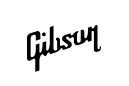

Les Paul 70s Deluxe
La Les Paul™ 70s Deluxe te devuelve a un momento legendario del rock, con la sensación genuina de una reliquia redescubierta
Presentada por primera vez en 1969, la Deluxe vio la introducción de la mini humbucker™ a la línea Les Paul. Las mini humbuckers conservan el rendimiento sin zumbidos de sus primas de tamaño completo, pero con una tonalidad algo más transparente y brillante. La nueva Deluxe tiene características inspiradas por las de los primeros modelos de la década de 1970, con un cuerpo de caoba sin alivio de peso y tapa de arce atada, un mástil de caoba atado con un perfil en C redondeada, afinadores Keystone estilo retro, cejuela GraphTech® y una disposición de control de Les Paul tradicional con 2 controles de volumen y 2 controles de tono cableados con condensadores Orange Drop®. Disponible en acabados lacados de nitrocelulosa brillante Goldtop clásico y Cherry Sunburst de los 70.
| Precio | 2.999,00 € | |
|---|---|---|
| Acabado | Wine Red | |
| Pastilla de mástil y Pastilla de puente | Mini humbucker |